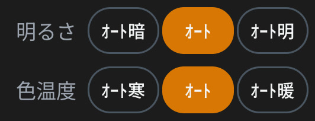
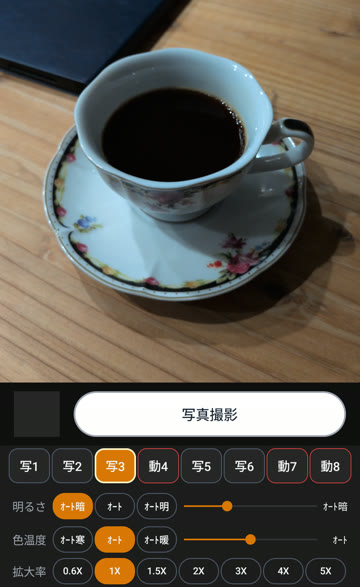
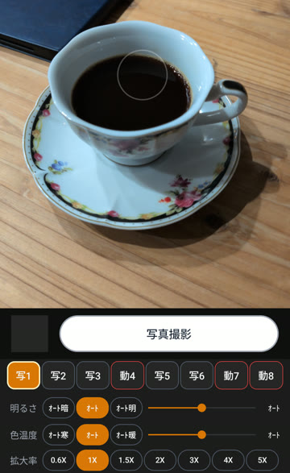
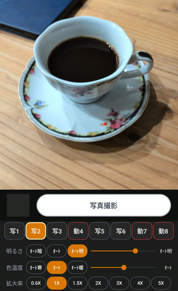
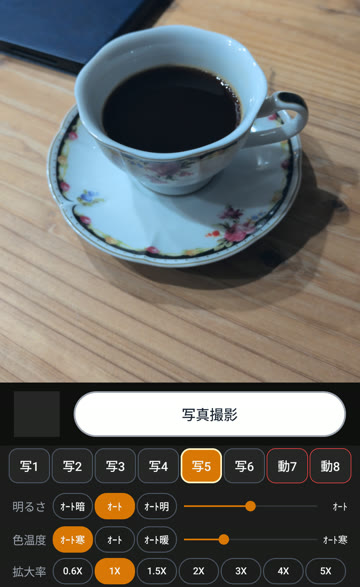
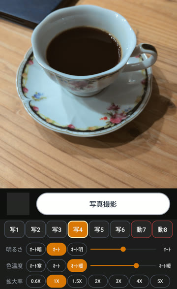
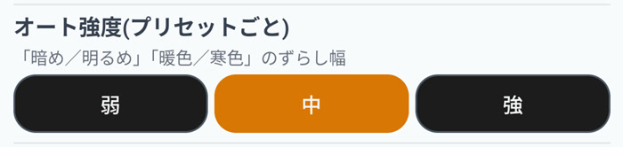
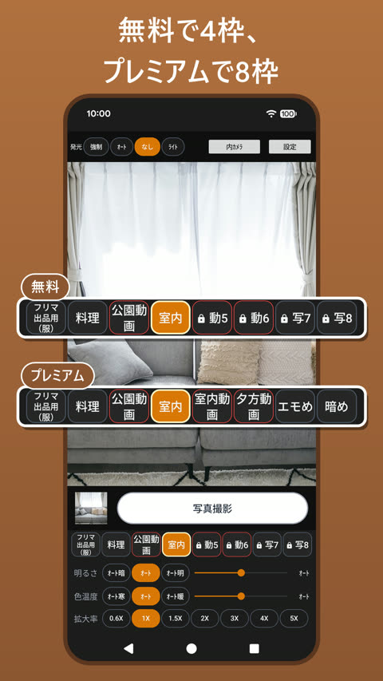
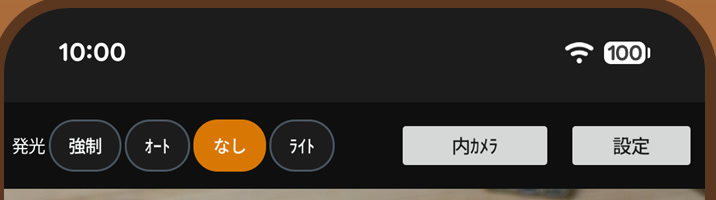

毎回、明るさを変えていた
スマホの純正カメラ、オートのままだと、私としてはいつもちょっと暗め。なので起動したら毎回、明るさを変更していました。
動画はもっと暗め。写真と動画で明るさが違うので、モードを切り替えると明るさの修正作業が発生。なかなか手間でした。
アプリを入れる前に、試してほしいこと
同じことで困っている方は、先にお使いのカメラの設定画面を、一度ひととおり見てみてください。カメラアプリによっては、明るさなどを残しておける項目があります。
それでも面倒だったこと
私は写真も動画も撮るので、それぞれで毎回合わせ直すのがとにかく面倒でした。撮る物によって、明るめにしたい日もあれば、少し暖かい色にしたい日もあります。
それなら、よく使う設定をボタンに入れておいて、1回押すだけで呼び出せるカメラを作ろう、と。プログラミングは未経験で、AIに聞きながら100日かけて作ったのが「ピッとカメラ」です。
実は以前、Androidアプリ作りに挑戦したことがあるのですが、挫折。今回は十数年ぶりのリベンジでした。
いちばん推したいのは、オートの明暗と寒暖
オートに、明暗と寒暖を付けました。ちょうどいい明るさや色味は人によって違うから、自分にとってベストなオートがあるとうれしい。そう思って作った機能です。

場面に合わせて自動で調整してくれるオートのよさはそのまま、好みの側へ少しだけ寄せられます。私の「いつもちょっと暗め」には、オート明がそのまま答えになりました。
明るさ



色味


夜の少し暗めの部屋で、同じカップを撮った画面です（切り取りと縮小のみ、色や明るさの加工なし）。下の段で、押しているボタンが分かります。
寄せる強さは、弱・中・強の3段階。ボタンごとに決められるので、写真用は弱、暗く写りやすい動画用は強、のように分けておけます。（色味の作り方は8回やり直しました）

設定はボタンに入れて、ワンタップで
明るさ、色温度、オートの種類、拡大率などを、ボタン（プリセット）ごとに保存できます。写真用か動画用かを選べて、名前も9文字まで付けられます。撮影画面でボタンを押せば、その設定に切り替わります。
ちなみに名前を付けられるようにしたのは、公開してから。約1か月半後のアップデートで足しました。

ボタンは無料で4つ、プレミアム（買い切り）で8つ。私は4〜8つあれば足りると思っていますが、もっと欲しい方がいたら、ぜひ教えてください～
作ってみて気づいた、フラッシュの文字ボタン
それまで使っていたカメラは、フラッシュのアイコンが隠れていて、パッとライトが出せませんでした。しかもアイコンだと、強制・オート・禁止・ライトのどれなのか分かりづらい。
なのでピッとカメラは、撮影画面の上に 強制・オート・なし・ライト を文字で並べました。アイコンより文字のほうが分かるし、1タップで切り替わります。

おすすめの使い方
いちばんよく使う設定を、1番目のボタンに入れておくこと。迷ったらまずそれを押す、だけで、いつもの明るさで撮れます。
ぜひ意見をください
ひとりで作っているアプリなので、使った方の声がいちばんの手がかりです。ここが使いにくい、こんな設定がほしい、なんでも大歓迎です。
オートで撮って「あと少しだけ明るければ・・・」と思ったこと、ありませんか？